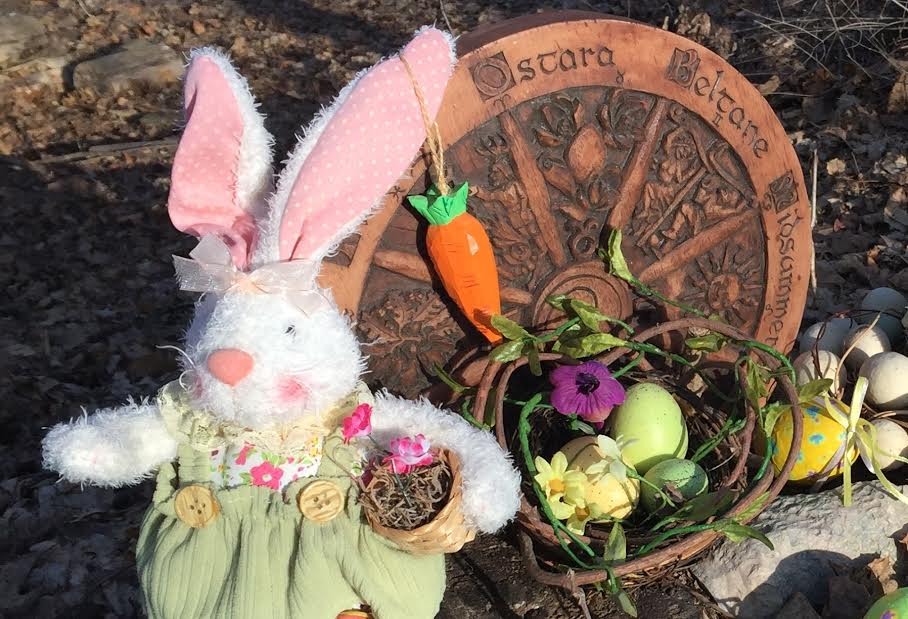
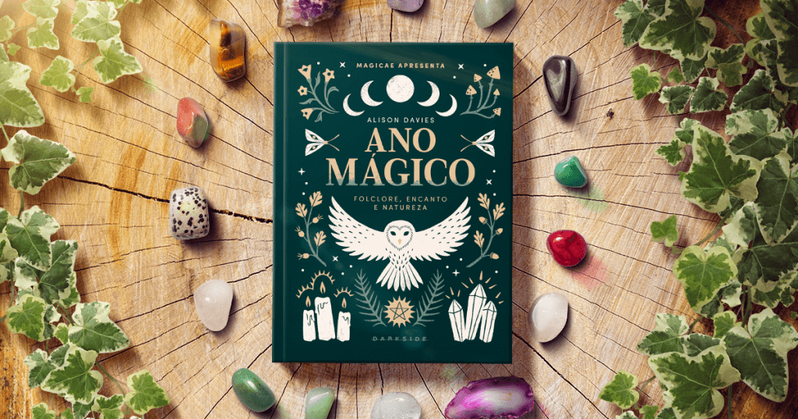
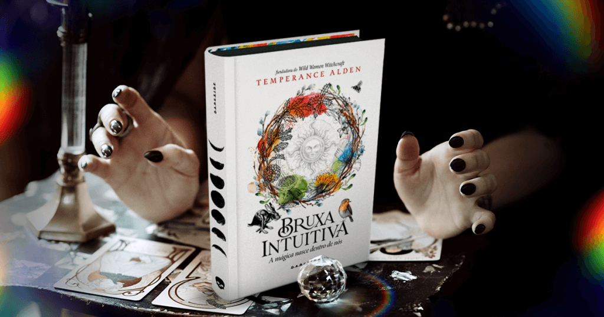

A maioria das pessoas no Ocidente, influenciadas pelo cristianismo, aprendeu que a Páscoa celebra a ressurreição de Jesus Cristo, no terceiro dia após sua crucificação e morte. Porém, a explicação bíblica ainda deixa algumas lacunas sobre elementos da data, como os coelhos e os ovos coloridos.
LEIA TAMBÉM: 2023 É O ANO DO COELHO NO HORÓSCOPO LUNAR
Isso acontece porque celebrações similares à Páscoa já existiam muito antes dos tempos bíblicos, e em diferentes povos. As origens pagãs da Páscoa estão fortemente relacionadas ao equinócio de primavera, que ocorre por volta do dia 20 de março no hemisfério norte.
Assim como ocorreu com outras celebrações pagãs, o cristianismo incorporou de maneira gradativa as tradições, dando seu próprio significado à data. A história simbólica da morte do filho (Sol) em uma cruz (a constelação Cruzeiro do Sul) e seu renascimento, superando o poder das trevas, é uma lenda bem famosa de civilizações antigas.
Costumes pagãos que foram incorporados à Páscoa
Coelhos, ovos coloridos, chocolates… nada disso estava nos capítulos bíblicos dedicados à Paixão de Cristo, sua morte e ressurreição. Mas por algum motivo hoje boa parte das pessoas celebra todos esses elementos como se fossem uma coisa só.
Vários dos aspectos mais divertidos da Páscoa vêm do paganismo. Os coelhos são uma lembrança do festival pagão de Ostara, deusa das mitologias anglo-saxã, nórdica e germânica. A deidade era simbolizada por um coelho ou lebre. A troca de ovos é outro costume de tempos pré-cristãos, celebrada por muitas culturas.
Os pães que hoje chamamos de colomba pascal também são bem antigos, e estão até na Bíblia, mas não nas passagens sobre a ressurreição de Cristo. Eles são citados no Antigo Testamento quando os israelitas assam bolinhos para um ídolo, e os líderes religiosos tentam acabar com isso. O próprio clero da Igreja tentou acabar com essa tradição de Páscoa, mas no fim das contas não conseguiram vencer o costume das mulheres pagãs e acabaram dando a sua bênção às guloseimas.
A Páscoa da bruxa: Ostara na Roda do Ano
Para as bruxas que seguem a Roda Norte, essa época é dedicada ao sabá Ostara, que celebra o equinócio de primavera — na Roda Sul, celebramos o Mabon em março. Alison Davies nos passa uma apresentação bem objetiva da festividade em Ano Mágico, explicando que durante esse evento celestial as energias da luz e das trevas entram em equilíbrio.
LEIA TAMBÉM: RODA DO ANO: CONHEÇA AS CELEBRAÇÕES DO CALENDÁRIO PAGÃO
Na bruxaria, esse é um momento interpretado como aquele em que o sol fica aguardando para explodir em ondas de energia renovada. Com a chegada da primavera, os dias começam a ficar mais longos, deixando para trás o frio e estéril inverno que tornava a vida dos povos antigos muito mais difícil.
Ostara é um sabá relacionado a sentimentos como fé e renovação — de maneira bem parecida com os significados associados à Páscoa cristã. É também tempo de celebrar a abundância conforme a natureza revive e honrar a fertilidade da terra.
Ainda não sabe qual eixo seguir na Roda do Ano? O livro Bruxa Intuitiva pode ajudar bastante a encontrar essa conexão consigo mesma e com a natureza para que você trace o caminho mágico que fizer mais sentido para você. Já em Diário Mágico você encontra mensagens, dicas, feitiços e rituais não apenas para Ostara, mas para todos os dias do ano, afinal, a magia não tem um dia especial para se manifestar.
Seja Páscoa, Ostara ou Mabon, celebrar o ciclo da vida e a renovação é sempre uma ótima maneira de fortalecer o nosso vínculo singular com o universo.
Este site foi desenvolvido exclusivamente como um projeto pessoal para praticar e aprimorar conhecimentos em programação, com créditos ao criador original